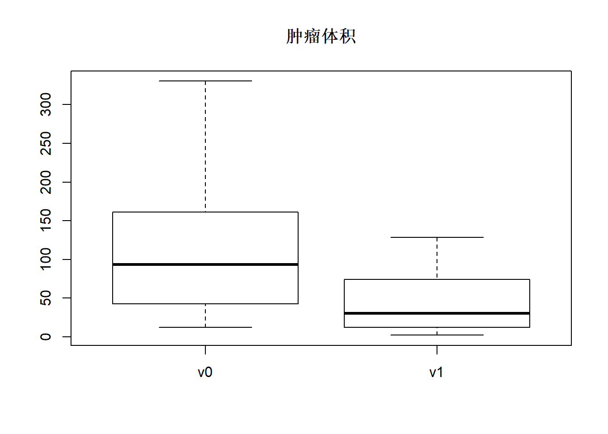
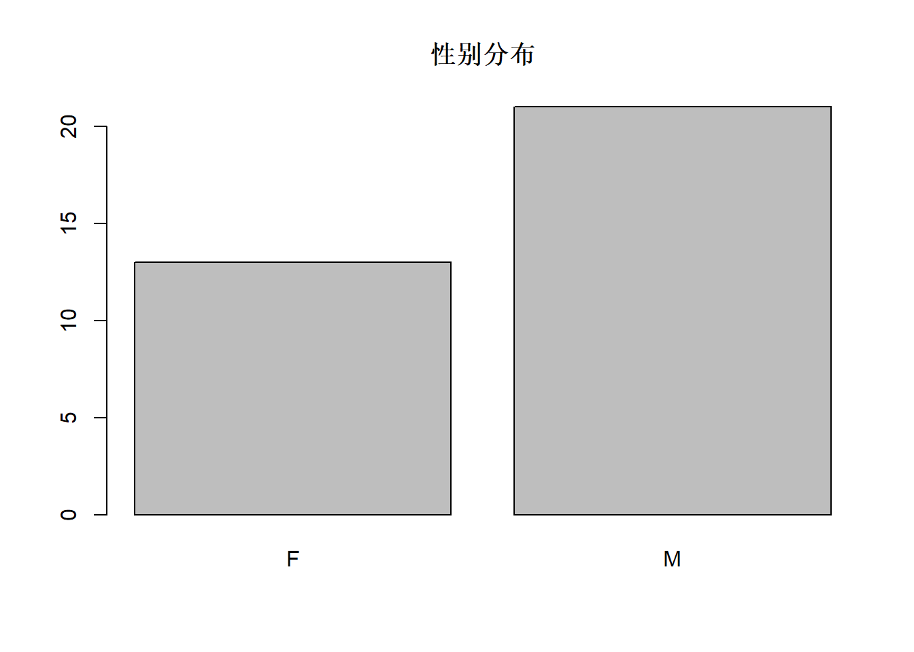
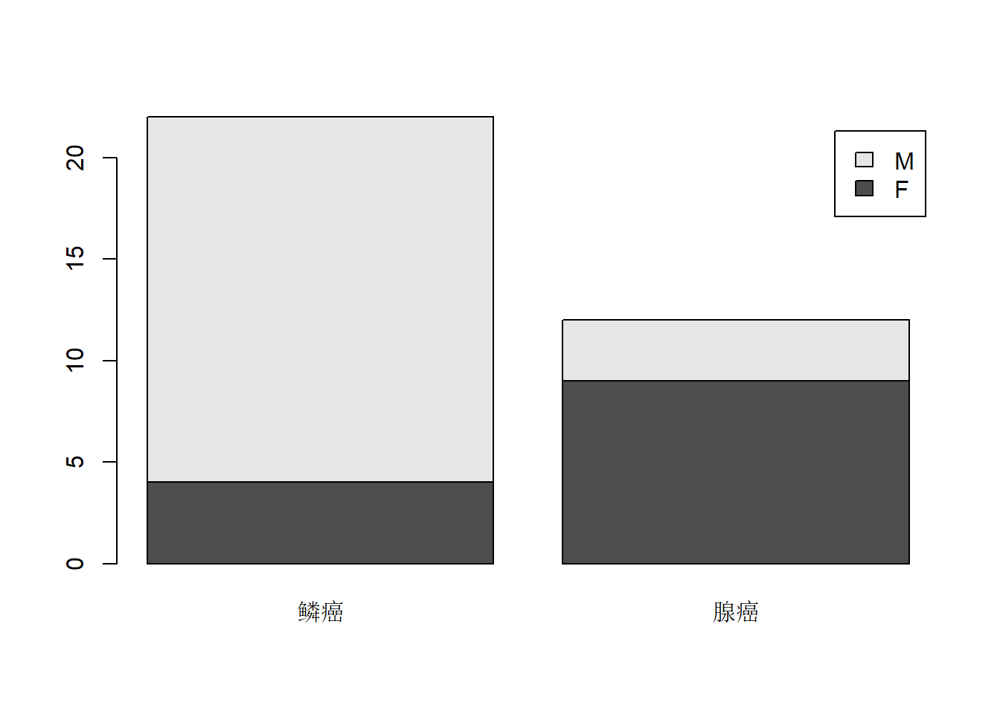
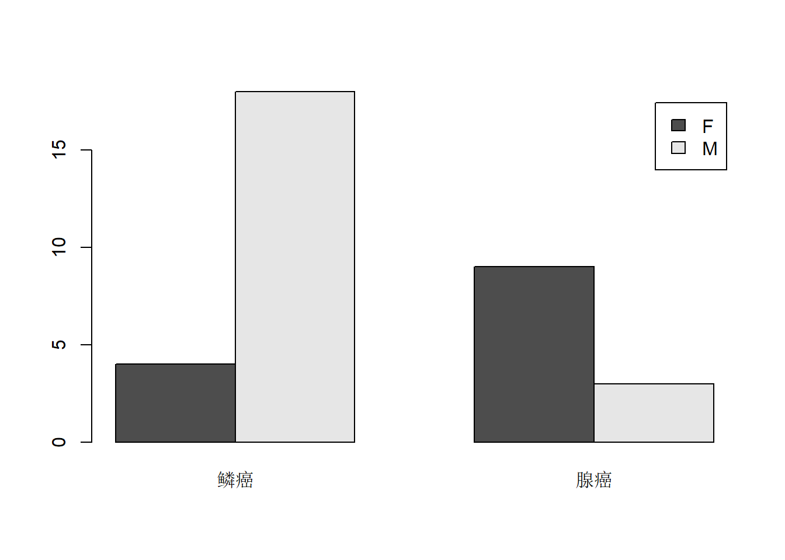

27 数据汇总
27.1 用dplyr作数据汇总
dplyr包的summarise()函数可以对数据框计算统计量。
以肺癌病人化疗数据cancer.csv为例，
有34个肺癌病人的数据：
## Parsed with column specification:
## cols(
## id = col_double(),
## age = col_double(),
## sex = col_character(),
## type = col_character(),
## v0 = col_double(),
## v1 = col_double()
## )| id | age | sex | type | v0 | v1 |
|---|---|---|---|---|---|
| 1 | 70 | F | 腺癌 | 26.51 | 2.91 |
| 2 | 70 | F | 腺癌 | 135.48 | 35.08 |
| 3 | 69 | F | 腺癌 | 209.74 | 74.44 |
| 4 | 68 | M | 腺癌 | 61.00 | 34.97 |
| 5 | 67 | M | 鳞癌 | 237.75 | 128.34 |
| 6 | 75 | F | 腺癌 | 330.24 | 112.34 |
| 7 | 52 | M | 鳞癌 | 104.90 | 32.10 |
| 8 | 71 | M | 鳞癌 | 85.15 | 29.15 |
| 9 | 68 | M | 鳞癌 | 101.65 | 22.15 |
| 10 | 79 | M | 鳞癌 | 65.54 | 21.94 |
| 11 | 55 | M | 腺癌 | 125.31 | 12.33 |
| 12 | 54 | M | 鳞癌 | 224.36 | 99.44 |
| 13 | 55 | F | 腺癌 | 12.93 | 2.30 |
| 14 | 75 | M | 腺癌 | 40.21 | 23.96 |
| 15 | 61 | F | 腺癌 | 12.58 | 7.39 |
| 16 | 76 | M | 鳞癌 | 231.04 | 112.58 |
| 17 | 65 | M | 鳞癌 | 172.13 | 91.62 |
| 18 | 66 | M | 鳞癌 | 39.26 | 13.95 |
| 19 | NA | F | 腺癌 | 32.91 | 9.45 |
| 20 | 63 | F | 腺癌 | 161.00 | 122.45 |
| 21 | 67 | M | 鳞癌 | 105.26 | 68.35 |
| 22 | 51 | M | 鳞癌 | 13.25 | 5.25 |
| 23 | 49 | M | 鳞癌 | 18.70 | 3.34 |
| 24 | 49 | M | 鳞癌 | 60.23 | 50.36 |
| 25 | NA | F | 鳞癌 | 223.00 | 25.59 |
| 26 | NA | M | 鳞癌 | 145.70 | 35.36 |
| 27 | NA | M | 鳞癌 | 138.44 | 11.30 |
| 28 | NA | M | 鳞癌 | 83.71 | 76.45 |
| 29 | NA | M | 鳞癌 | 74.48 | 23.66 |
| 30 | NA | F | 腺癌 | 42.70 | 5.97 |
| 31 | NA | M | 鳞癌 | 142.48 | 68.46 |
| 32 | NA | F | 鳞癌 | 46.97 | 27.32 |
| 33 | NA | F | 鳞癌 | 170.63 | 74.76 |
| 34 | NA | F | 鳞癌 | 67.37 | 54.52 |
求年龄(age)的观测个数、非缺失观测个数、平均值、标准差：
d.cancer %>%
summarise(
nobs = n(),
n = sum(!is.na(age)),
mean.age=mean(age, na.rm=TRUE),
sd.age=sd(age, na.rm=TRUE)) %>%
knitr::kable()| nobs | n | mean.age | sd.age |
|---|---|---|---|
| 34 | 23 | 64.13043 | 9.161701 |
其中n()计算观测数（行数）。
为了计算某列的非缺失值个数，用sum(!is.na(x))。
summarise中常用的汇总函数有：
- 位置度量：
mean(),median()。 - 分散程度（变异性）度量：
sd(),IQR(),mad()。 - 分位数：
min(),max(),quantile()。 - 按下标查询，如
first(x)取出x[1]，last(x)取出x的最后一个元素，nth(x,2)取出x[2]。 可以提供一个缺省值以防某个下标位置不存在。 - 计数：
n()给出某个组的观测数，sum(!is.na(x))统计x的非缺失值个数，n_distinct(x)统计x的不同值个数(缺失值也算一个值)。count(x)给出x的每个不同值的个数（类似于table()函数）。
这里有些函数是dplyr包提供的， 仅适用于tibble类型。
27.2 多个变量的汇总
在有多个变量需要汇总时，
summarise的格式就会比较罗嗦。
比如，
需要对cancer数据集中v0和v1两个变量同时计算平均值和标准差：
d.cancer %>%
summarise(
mean.v0=mean(v0, na.rm=TRUE),
sd.v0 = sd(v0, na.rm=TRUE),
mean.v1=mean(v1, na.rm=TRUE),
sd.v1 = sd(v1, na.rm=TRUE)) %>%
knitr::kable()| mean.v0 | sd.v0 | mean.v1 | sd.v1 |
|---|---|---|---|
| 110.0768 | 79.52338 | 44.69353 | 38.44172 |
显然，如果有许多变量要计算不止一个统计量，
就需要人为地将每一个变量的每一个统计量单独命名。
dplyr包的summarse_at()函数可以指定一批变量名与一批统计函数，
自动命名结果变量，如：
d.cancer %>%
summarise_at(
c("v0", "v1"),
list(avg = ~mean(.), std = ~sd(.)),
na.rm=TRUE) %>%
knitr::kable()| v0_avg | v1_avg | v0_std | v1_std |
|---|---|---|---|
| 110.0768 | 44.69353 | 79.52338 | 38.44172 |
其中的选项na.rm将作为...格式的参数传递给统计函数mean和sd。
summarise_at的第三自变量（在管道中的第二自变量位置）可以取：
- 一个函数，如
mean； - 一个如
~ f(.)这样的自定义无名函数，其中.表示自变量； - 函数或者自定义无名函数的列表。
结果统计量自动命名为“变量名_统计量名”的格式。
其中的变量子集也可以用序号范围表示，
或者用vars()函数写成不加撇号的格式，如：
| v0_avg | v1_avg | v0_std | v1_std |
|---|---|---|---|
| 110.0768 | 44.69353 | 79.52338 | 38.44172 |
或
d.cancer %>%
summarise_at(
vars(v0, v1),
list(avg = ~mean(.), std = ~sd(.)),
na.rm=TRUE) %>%
knitr::kable()| v0_avg | v1_avg | v0_std | v1_std |
|---|---|---|---|
| 110.0768 | 44.69353 | 79.52338 | 38.44172 |
如果要对所有数值型变量计算某些统计量，
可以用summarize_if(is.numeric, list(变量后缀=~统计函数名<, ...>))，
如：
d.cancer %>%
summarise_if(
is.numeric,
list(avg = ~mean(.), std = ~sd(.)),
na.rm=TRUE) %>%
knitr::kable()| id_avg | age_avg | v0_avg | v1_avg | id_std | age_std | v0_std | v1_std |
|---|---|---|---|---|---|---|---|
| 17.5 | NA | 110.0768 | 44.69353 | 9.958246 | NaN | 79.52338 | 38.44172 |
其中的is_numeric用来筛选需要进行统计的变量子集，
可以替换成其它的示性函数（对每列返回一个逻辑值的函数）。
summarise_all可以对所有变量计算统计量，如：
d.cancer %>%
select(v0, v1) %>%
summarise_all(
list(avg = ~mean(.), std = ~sd(.)),
na.rm=TRUE) %>%
knitr::kable()| v0_avg | v1_avg | v0_std | v1_std |
|---|---|---|---|
| 110.0768 | 44.69353 | 79.52338 | 38.44172 |
可以用tidyr包将上面的变量与统计量拆开， 将变量放到不同的观测中，如：
d.cancer %>%
select(v0, v1) %>%
summarise_all(
list(avg = ~mean(.), std = ~sd(.)),
na.rm=TRUE) %>%
pivot_longer(
everything(),
names_sep ="_",
names_to = c("variable", ".value")
) %>%
knitr::kable()| variable | avg | std |
|---|---|---|
| v0 | 110.07676 | 79.52338 |
| v1 | 44.69353 | 38.44172 |
27.3 用dplyr作数据分组汇总
数据汇总问题更常见的是作分组汇总。
dplyr包的group_by()函数对数据框（或tibble）分组，
随后的summarise()将按照分组汇总。
比如， 按不同性别分组计算人数与年龄平均值：
d.cancer %>%
group_by(sex) %>%
summarise(
count=n(),
mean.age=mean(age, na.rm=TRUE)) %>%
knitr::kable()| sex | count | mean.age |
|---|---|---|
| F | 13 | 66.14286 |
| M | 21 | 63.25000 |
按不同性别分组计算v0和v1的人数、平均值、标准差：
d.cancer %>%
group_by(sex) %>%
summarise_at(
c("v0", "v1"),
list(count = ~n(), avg = ~mean(.), std = ~sd(.)),
na.rm=TRUE) %>%
knitr::kable()| sex | v0_count | v1_count | v0_avg | v1_avg | v0_std | v1_std |
|---|---|---|---|---|---|---|
| F | 13 | 13 | 113.2354 | 42.65538 | 100.06621 | 41.72226 |
| M | 21 | 21 | 108.1214 | 45.95524 | 66.45374 | 37.27592 |
上面的程序应该将v0_count和v1_count合并，
但是summarise_at在有多个变量和多个统计量时总会将变量两两搭配，
确实需要时可以分别统计再合并，结果程序会略繁琐一些：
bind_cols(
d.cancer %>%
group_by(sex) %>%
summarise(count = n() ),
d.cancer %>%
group_by(sex) %>%
summarise_at(
c("v0", "v1"),
list(avg = ~mean(.), std = ~sd(.)),
na.rm=TRUE) %>%
select(-sex)
)## # A tibble: 2 x 6
## sex count v0_avg v1_avg v0_std v1_std
## <chr> <int> <dbl> <dbl> <dbl> <dbl>
## 1 F 13 113. 42.7 100. 41.7
## 2 M 21 108. 46.0 66.5 37.3为了查询数值型变量取值满足某种条件的个数和比例，
可以将该条件用sum()和mean()函数统计，
比如，
对男女两组分别计算年龄在60岁以上的人数和比例：
d.cancer %>%
group_by(sex) %>%
summarise(
nold = sum(age >= 60, na.rm=TRUE),
pold = nold / n()) %>%
knitr::kable()| sex | nold | pold |
|---|---|---|
| F | 6 | 0.4615385 |
| M | 10 | 0.4761905 |
用group_by()分组后除了可以分组汇总，
还可以分组筛选：
d.cancer %>%
group_by(sex) %>%
filter(rank(desc(v0)) <= 2) %>%
arrange(sex, desc(v0)) %>%
knitr::kable()| id | age | sex | type | v0 | v1 |
|---|---|---|---|---|---|
| 6 | 75 | F | 腺癌 | 330.24 | 112.34 |
| 25 | NA | F | 鳞癌 | 223.00 | 25.59 |
| 5 | 67 | M | 鳞癌 | 237.75 | 128.34 |
| 16 | 76 | M | 鳞癌 | 231.04 | 112.58 |
以上程序按性别分组后， 在每组中找出疗前体积排名在前两名的。
在分组后也可以根据每组的统计量用mutate()定义新变量。
比如，每组的v0, v1除以本组的最大值（结果略）：
27.4 交叉分类的汇总
下面的程序对d.cancer数据框分性别与病理类型分别统计人数：
| sex | type | freq |
|---|---|---|
| F | 鳞癌 | 4 |
| F | 腺癌 | 9 |
| M | 鳞癌 | 18 |
| M | 腺癌 | 3 |
如果仅需要计算交叉分类频数，
不需要用group_by()，
可以用dplyr的count()函数，如：
| sex | type | n |
|---|---|---|
| F | 鳞癌 | 4 |
| F | 腺癌 | 9 |
| M | 鳞癌 | 18 |
| M | 腺癌 | 3 |
下面的程序数出NHANES数据框中ID(受访者编码)与SurveyYr(考察年份)每一对组合的出现次数, 筛选出二次及以上者，并降序排列，仅显示前10行结果：
NHANES %>%
count(ID, SurveyYr) %>%
filter(n >=2 ) %>%
arrange(desc(n)) %>%
head(10) %>%
knitr::kable()| ID | SurveyYr | n |
|---|---|---|
| 70324 | 2011_12 | 8 |
| 62927 | 2011_12 | 7 |
| 63297 | 2011_12 | 7 |
| 69626 | 2011_12 | 7 |
| 60566 | 2009_10 | 6 |
| 61442 | 2009_10 | 6 |
| 63163 | 2011_12 | 6 |
| 63330 | 2011_12 | 6 |
| 63390 | 2011_12 | 6 |
| 63744 | 2011_12 | 6 |
用group_by()交叉分组汇总后的结果不是普通的tibble，
总是带有外层分组信息，
最内层的分组信息不再有效。
不注意这种规定在后续的使用中可能会产生问题，
为此，
可以用ungroup()函数取消分组。
例如，
希望在用group_by()按照性别和病理类别交叉分类计算频数后求所有病人的总人数，
用了如下程序：
d.cancer %>%
group_by(sex, type) %>%
summarise(freq=n()) %>%
summarise(ntotal=sum(freq)) %>%
knitr::kable()| sex | ntotal |
|---|---|
| F | 13 |
| M | 21 |
可以看出并没有能够计算总人数，
而是按原来交叉分类的外层分类即性别分组计算了总人数。
这是因为交叉分组计算频数后的结果仍按照外层分类变量sex分组，
所以summarise(ntotal=sum(freq))也是分两组进行的。
在中间加入ungroup()就可以不分组计算总人数：
d.cancer %>%
group_by(sex, type) %>%
summarise(freq=n()) %>%
ungroup() %>%
summarise(ntotal=sum(freq)) %>%
knitr::kable()| ntotal |
|---|
| 34 |
得到了需要的结果。
27.5 tibble中的列表列
27.5.1 nest和unnest
dplyr包的group_by与summarise、summarise_at等函数配合，
可以对数据框分组计算各种概括统计量。
但是，如果分组以后希望进行更复杂的统计分析，
比如分组回归建模，
summarise就不够用了。
这时，
可以用基本R的split函数将数据框按某个分类变量拆分为子数据框的列表，
然后用purrr包的map类函数分类建模，
最终将各个模型的结果合并为一个数据框。
上面的办法虽然可行，
但是管理不够方便。
tidyr包（属于tidyverse系列，载入tidyverse时会自动载入）提供了nest和unnest函数，
可以将子数据框保存在tibble中，
可以将保存在tibble中的子数据框合并为一个大数据框。
实际上，
tibble允许存在数据类型是列表(list)的列，
子数据框就是以列表数据类型保存在tibble的一列中的。
27.5.2 group_by与nest配合
对数据框用group_by分组后调用nest函数就可以生成每个组的子数据框。
例如，
将d.cancer数据框按type分类拆分为2个子数据框，
存入tibble的data列中：
## # A tibble: 2 x 2
## # Groups: type [2]
## type data
## <chr> <list>
## 1 腺癌 <tibble [12 x 5]>
## 2 鳞癌 <tibble [22 x 5]>现在data列是列表类型的，
有2个元素，
每个元素是一个子数据框。
group_by()中也可以用两个或多个分类变量构成交叉分组。
可以用purrr包的map()等函数对每个子数据框进行处理，
结果可以用mutate保存为新的列表类型的列，
如果结果是数值型标量也可以保存为普通的数据框列。
例如，下面先定义对子数据框回归建模的函数，
然后用purrr包的map函数将回归建模的函数作用到data列的每个元素，
用mutate保存到列表类型的lmr列中：
fmod <- function(subdf) lm(v1 ~ v0, data = subdf)
mod.cancer <- d.cancer %>%
group_by(type) %>%
nest() %>%
mutate(lmr = map(data, fmod))
mod.cancer## # A tibble: 2 x 3
## # Groups: type [2]
## type data lmr
## <chr> <list> <list>
## 1 腺癌 <tibble [12 x 5]> <lm>
## 2 鳞癌 <tibble [22 x 5]> <lm>写一个函数从一个回归模型及相应子数据框中， 提取R方， 将提取的结果保存为普通数值型列r.squared：
frsqr <- function(mod){
summary(mod)$r.squared
}
mod.cancer %>%
mutate(
r.squared = map_dbl(lmr, frsqr)) %>%
select(-data, -lmr)## # A tibble: 2 x 2
## # Groups: type [2]
## type r.squared
## <chr> <dbl>
## 1 腺癌 0.710
## 2 鳞癌 0.520map()和map_dbl()中输入函数时可以用purrr包的无名函数写法，如：
d.cancer %>%
group_by(type) %>%
nest() %>%
mutate(
lmr = map(data, ~ lm(v1 ~ v0, data = .x)),
r.squared = map_dbl(lmr, ~ summary(.x)$r.squared)) %>%
select(-data, -lmr)## # A tibble: 2 x 2
## # Groups: type [2]
## type r.squared
## <chr> <dbl>
## 1 腺癌 0.710
## 2 鳞癌 0.520也可以从每个模型提取多个值， 这时， 为了使得多个值在展开时能保存在同一行中， 需要将每个子数据框的提取结果保存为一个一行的子数据框：
fextract <- function(mod){
x1 <- coef(mod)
tibble(
intercept = x1[1],
v0 = x1[2],
r.squared = summary(mod)$r.squared
)
}
mod.cancer %>%
mutate(
outlist = map(lmr, fextract))## # A tibble: 2 x 4
## # Groups: type [2]
## type data lmr outlist
## <chr> <list> <list> <list>
## 1 腺癌 <tibble [12 x 5]> <lm> <tibble [1 x 3]>
## 2 鳞癌 <tibble [22 x 5]> <lm> <tibble [1 x 3]>结果的outlist列是列表类型的，
每个元素是一个\(1 \times 3\)的tibble。
下面，就可以用unnest将每个组提取的回归结果转换为普通的数据框列：
## # A tibble: 2 x 4
## # Groups: type [2]
## type intercept v0 r.squared
## <chr> <dbl> <dbl> <dbl>
## 1 腺癌 0.225 0.370 0.710
## 2 鳞癌 5.51 0.374 0.520提取的结果也可以是一个不止一行的子数据框，例如， 提取回归结果中的系数估计、标准误差、t统计量和检验p值组成的矩阵：
fcoefmat <- function(mod){
as_tibble(summary(mod)$coefficients,
rownames="term")
}
mod.cancer %>%
mutate(
outlist = map(lmr, fcoefmat)) %>%
unnest(outlist) %>%
select(-data, - lmr)## # A tibble: 4 x 6
## # Groups: type [2]
## type term Estimate `Std. Error` `t value` `Pr(>|t|)`
## <chr> <chr> <dbl> <dbl> <dbl> <dbl>
## 1 腺癌 (Intercept) 0.225 10.2 0.0221 0.983
## 2 腺癌 v0 0.370 0.0749 4.94 0.000585
## 3 鳞癌 (Intercept) 5.51 10.8 0.510 0.616
## 4 鳞癌 v0 0.374 0.0803 4.66 0.000151为了更好地提取统计模型的信息为规整的数据框格式， broom扩展包提供了tidy函数， 可以将统计模型的输出转换为数据框； 这些功能与tidyr的nest, unnest配合， 可以很好地提取统计模型的信息，如：
## # A tibble: 4 x 6
## # Groups: type [2]
## type term estimate std.error statistic p.value
## <chr> <chr> <dbl> <dbl> <dbl> <dbl>
## 1 腺癌 (Intercept) 0.225 10.2 0.0221 0.983
## 2 腺癌 v0 0.370 0.0749 4.94 0.000585
## 3 鳞癌 (Intercept) 5.51 10.8 0.510 0.616
## 4 鳞癌 v0 0.374 0.0803 4.66 0.000151unnest提取出的信息也可以是一个向量，
在展开时会展开到同一列中。
例如，
对每个组提取回归的拟合值：
## # A tibble: 34 x 7
## # Groups: type [2]
## type id age sex v0 v1 v1hat
## <chr> <dbl> <dbl> <chr> <dbl> <dbl> <dbl>
## 1 腺癌 1 70 F 26.5 2.91 10.0
## 2 腺癌 2 70 F 135. 35.1 50.4
## 3 腺癌 3 69 F 210. 74.4 77.9
## 4 腺癌 4 68 M 61 35.0 22.8
## 5 腺癌 6 75 F 330. 112. 123.
## 6 腺癌 11 55 M 125. 12.3 46.6
## 7 腺癌 13 55 F 12.9 2.3 5.01
## 8 腺癌 14 75 M 40.2 24.0 15.1
## 9 腺癌 15 61 F 12.6 7.39 4.88
## 10 腺癌 19 NA F 32.9 9.45 12.4
## # ... with 24 more rows程序中的unnest将data列和v1hat列都释放为普通的数据框列了，
data列中释放出了多列原始数据，
fitted列中释放出了v1回归拟合值。
27.5.3 summarise统计量用列表表示
实际上，
summarise等函数如果将结果用list()声明，
汇总结果就可以保存为列表类型的列，
结果可以包含多个值，
unnest可以将结果恢复成正常的数据框，
如：
vnames <- expand_grid(
var = c("v0", "v1"),
stat = c("min", "max")) %>%
pmap_chr(paste, sep="_")
d.cancer %>%
group_by(type) %>%
summarise(
stat = list(vnames),
value = list(c(range(v0), range(v1))) ) %>%
unnest(c(stat, value))## # A tibble: 8 x 3
## type stat value
## <chr> <chr> <dbl>
## 1 鳞癌 v0_min 13.2
## 2 鳞癌 v0_max 238.
## 3 鳞癌 v1_min 3.34
## 4 鳞癌 v1_max 128.
## 5 腺癌 v0_min 12.6
## 6 腺癌 v0_max 330.
## 7 腺癌 v1_min 2.3
## 8 腺癌 v1_max 122.这个例子可以用长宽表转换方法变成每个统计量占一列：
d.cancer %>%
group_by(type) %>%
summarise(
stat = list(vnames),
value = list(c(range(v0), range(v1))) ) %>%
unnest(c(stat, value)) %>%
separate(stat, into = c("variable", "stat"), sep="_") %>%
pivot_wider(
names_from = "stat",
values_from = "value"
)## # A tibble: 4 x 4
## type variable min max
## <chr> <chr> <dbl> <dbl>
## 1 鳞癌 v0 13.2 238.
## 2 鳞癌 v1 3.34 128.
## 3 腺癌 v0 12.6 330.
## 4 腺癌 v1 2.3 122.27.5.4 unnest的语法格式
unnest()第一自变量为管道输入的数据框，
第二自变量cols可以用如下格式：
- 单个变量名，不需要写成字符串形式；
- 多个变量名，写成
c(x, y, z)这样的格式，不需要写成字符型向量； - 保存在字符型向量中的变量名，用
one_of(vnames)格式， 其中vnames是保存了要释放的列名的字符型向量的变量名; 也可以写成one_of(c("x", "y", "z"))这样的格式。
27.5.5 直接生成列表类型的列
也可以直接生成列表类型的列，
符合条件时可以用unnest()合并为大数据框。
如：
d1 <- tibble(
id = 1:2,
df = vector("list", length=2))
d1[["df"]][1] <- list(
tibble(x=1, y=2)
)
d1[["df"]][2] <- list(
tibble(x=11:12, y=21:22)
)
d1 %>%
unnest(cols = c(df))## # A tibble: 3 x 3
## id x y
## <int> <dbl> <dbl>
## 1 1 1 2
## 2 2 11 21
## 3 2 12 2227.6 基本R的汇总功能
27.6.1 summary()函数
对数值型向量x，用summary(x)可以获得变量的平均值、中位数、
最小值、最大值、四分之一和四分之三分位数。 如
## Min. 1st Qu. Median Mean 3rd Qu. Max.
## 12.58 43.77 93.40 110.08 157.18 330.24## Min. 1st Qu. Median Mean 3rd Qu. Max.
## 2.30 12.73 30.62 44.69 72.94 128.34v0是放疗前的肿瘤体积， v1是放疗后的体积， 可以看出放疗后体积减小了很多。
可以用盒形图表现类似的信息，如

对一个数据框d， 用summary(d)可以获得每个连续型变量的基本统计量，
和每个离散取值变量的频率。如
## id age sex type
## Min. : 1.00 Min. :49.00 Length:34 Length:34
## 1st Qu.: 9.25 1st Qu.:55.00 Class :character Class :character
## Median :17.50 Median :67.00 Mode :character Mode :character
## Mean :17.50 Mean :64.13
## 3rd Qu.:25.75 3rd Qu.:70.00
## Max. :34.00 Max. :79.00
## NA's :11
## v0 v1
## Min. : 12.58 Min. : 2.30
## 1st Qu.: 43.77 1st Qu.: 12.73
## Median : 93.40 Median : 30.62
## Mean :110.08 Mean : 44.69
## 3rd Qu.:157.18 3rd Qu.: 72.94
## Max. :330.24 Max. :128.34
## 对数据框d，用str(d)可以获得各个变量的类型和取值样例。 如
## Classes 'spec_tbl_df', 'tbl_df', 'tbl' and 'data.frame': 34 obs. of 6 variables:
## $ id : num 1 2 3 4 5 6 7 8 9 10 ...
## $ age : num 70 70 69 68 67 75 52 71 68 79 ...
## $ sex : chr "F" "F" "F" "M" ...
## $ type: chr "腺癌" "腺癌" "腺癌" "腺癌" ...
## $ v0 : num 26.5 135.5 209.7 61 237.8 ...
## $ v1 : num 2.91 35.08 74.44 34.97 128.34 ...
## - attr(*, "spec")=
## .. cols(
## .. id = col_double(),
## .. age = col_double(),
## .. sex = col_character(),
## .. type = col_character(),
## .. v0 = col_double(),
## .. v1 = col_double()
## .. )用head(d)可以返回数据框（或向量、矩阵）的前几行，
用tail(d)可以返回数据框的后几行。
27.6.2 连续型变量概括函数
对连续取值的变量x，
可以用mean, std, var, sum, prod,
min, max等函数获取基本统计量。
加na.rm=TRUE选项可以仅对非缺失值计算。
sort(x)返回排序后的结果。
rev(x)把x所有元素次序颠倒后返回。
quantile(x, c(0.05, 0.95))可以求x的样本分位数。
rank(x)对x求秩得分（即名次，但从最小到最大排列）。
27.6.3 分类变量概括
分类变量一般输入为因子。
对因子或其它向量x，
table(x)返回x的每个不同值的频率（出现次数），
结果为一个类（class）为table的一维数组。
每个元素有对应的元素名，为x的各水平值。
如
##
## F M
## 13 21## F
## 13对单个分类变量, table结果是一个有元素名的向量。
用as.data.frame()函数把table的结果转为数据框:
## Var1 Freq
## 1 F 13
## 2 M 21用prop.table()将频数转换成百分比：
##
## F M
## 0.3823529 0.6176471table作的单变量频数表可以用barplot表现为图形，如:

对两个分类变量x1和x2，
其每个组合的出现次数可以用table(x1,x2)函数统计， 结果叫做列联表。
如
## type
## sex 鳞癌 腺癌
## F 4 9
## M 18 3结果是一个类为table的二维数组（矩阵），
每行以第一个变量x1的各水平值为行名，
每列以第二个变量x2的各水平值为列名。
这里用了with()函数引入一个数据框，
后续的参数中的表达式可以直接使用数据框的变量。
对两个分类变量, table结果是一个矩阵。
用as.data.frame函数把table的结果转为数据框:
## sex type Freq
## 1 F 鳞癌 4
## 2 M 鳞癌 18
## 3 F 腺癌 9
## 4 M 腺癌 3列联表的结果可以用条形图表示。如

或

对于table()的结果列联表，
可以用addmargins()函数增加行和与列和。 如
## type
## sex 鳞癌 腺癌 Sum
## F 4 9 13
## M 18 3 21
## Sum 22 12 34用margin.table()可以计算列联表行或列的和并返回，如
## sex
## F M
## 13 21## type
## 鳞癌 腺癌
## 22 12用prop.table(r)把一个列联表r转换成百分比表。 如
## type
## sex 鳞癌 腺癌
## F 0.11764706 0.26470588
## M 0.52941176 0.08823529用prop.table(res,1)把列联表res转换成行百分比表。
用prop.table(res,2)把列联表res转换成列百分比表。 如
## type
## sex 鳞癌 腺癌
## F 0.3076923 0.6923077
## M 0.8571429 0.1428571## type
## sex 鳞癌 腺癌
## F 0.1818182 0.7500000
## M 0.8181818 0.2500000在有多个分类变量时，
用as.data.frame(table(x1, x2, x3))
形成多个分类变量交叉分类的频数统计数据框。
dplyr包的count()功能与table()类似。
27.6.4 数据框概括
用colMeans()对数据框或矩阵的每列计算均值，
用colSums()对数据框或矩阵的每列计算总和。
用rowMeans()和rowSums()对矩阵的每行计算均值或总和。
数据框与矩阵有区别，
某些适用于矩阵的计算对数据框不适用，
例如矩阵乘法。
用as.matrix()把数据框的数值子集转换成矩阵。
对矩阵，用apply(x, 1, FUN)对矩阵x的每一行使用函数FUN计算结果，
用apply(x, 2, FUN)对矩阵x的每一列使用函数FUN计算结果。
如果apply(x,1,FUN)中的FUN对每个行变量得到多个\(m\)结果，
结果将是一个矩阵，行数为\(m\)，列数等于nrow(x)。
如果apply(x,2,FUN)中的FUN对每个列变量得到多个\(m\)结果，
结果将是一个矩阵，行数为\(m\)，列数等于ncol(x)。
例如：
apply(as.matrix(iris[,1:4]), 2,
function(x)
c(n=sum(!is.na(x)),
mean=mean(x, na.rm=TRUE),
sd=sd(x, na.rm=TRUE)))## Sepal.Length Sepal.Width Petal.Length Petal.Width
## n 150.0000000 150.0000000 150.000000 150.0000000
## mean 5.8433333 3.0573333 3.758000 1.1993333
## sd 0.8280661 0.4358663 1.765298 0.762237727.7 用基本R作分类概括
27.7.1 用tapply()分组概括向量
用tapply()函数进行分组概括, 格式为：
其中X是一个向量， INDEX是一个分类变量， FUN是概括统计函数。
比如，下面的程序分性别组计算疗前体积的均值：
## F M
## 113.2354 108.121427.7.2 用aggregate()分组概括数据框
aggregate函数对输入的数据框用指定的分组变量（或交叉分组）
分组进行概括统计。
例如，下面的程序按性别分组计算年龄、疗前体积、疗后体积的平均值:
## sex age v0 v1
## 1 F 66.14286 113.2354 42.65538
## 2 M 63.25000 108.1214 45.95524aggregate()第一个参数是数据框，
第二个参数是列表，列表元素是用来分组或交叉分组的变量，
第三个参数是概括用的函数，
概括用的函数的选项可以在后面给出。
可以交叉分组后概括，如
## sex type v0 v1
## 1 F 鳞癌 126.99250 45.54750
## 2 M 鳞癌 113.55722 49.65556
## 3 F 腺癌 107.12111 41.37000
## 4 M 腺癌 75.50667 23.7533327.7.3 用split()函数分组后概括
split函数可以把数据框的各行按照一个或几个分组变量分为子集的列表，
然后可以用sapply()或vapply()对每组进行概括。
如
## F M
## v0 113.23538 108.12143
## v1 42.65538 45.95524返回矩阵，行为变量v0, v1，列为不同性别，
值为相应的变量在各性别组的平均值。
当sapply()对列表每项的操作返回一个向量时，
总是列表每项的输出保存为结果的一列。
colMeans函数计算分组后数据框子集每列的平均值。
27.8 用plyr包进行分类概括
plyr是一个专注于分组后分别分析然后将分析结果尽可能合理地合并的扩展包, 功能强大， dplyr包仅针对数据框，使用更方便，但是对于复杂情况功能不如plyr包强。 plyr包已经被dplyr、purrr包代替，不再继续开发新版本。 这部分内容仅作为备忘， 读者可以跳过。
plyr的输入支持数组、数据框、列表， 输出支持数组、数据框、列表或无输出。 分组分析的函数输出格式需要与指定的输出格式一致。
这里主要介绍从数据框分组概括并将结果保存为数据框的方法，
使用plyr包的ddply()函数。
实际上，dplyr包的这种功能更方便。
plyr包的优点是可以自定义概括函数，
使得结果表格符合用户的预期，
处理多个变量时程序更简洁。
plyr包与dplyr包的函数名冲突比较大， 所以需要先卸载dplyr包再调用plyr包：
ddply()函数第一自变量是要分组的数据框，
第二自变量是分组用的变量名，
第三自变量是一个概括函数，
此概括函数以一个数据框子集（数据类型是数据框）为输入，
输出是一个数值、一个数值型向量或者一个数据框,
但最好是数据框。
例如，按性别分组，计算v0的平均值：
下面的程序按性别分组， 分别计算v0与v1的平均值：
下面的程序按性别分组，计算v0和v1的平均值、标准差：
f1 <- function(dsub){
tab <- tibble(
"变量"=c("v0", "v1"),
"均值"=c(mean(dsub[,"v0"], na.rm=TRUE),
mean(dsub[,"v1"], na.rm=TRUE)),
"标准差"=c(sd(dsub[,"v0"], na.rm=TRUE),
sd(dsub[,"v1"], na.rm=TRUE)))
tab
}
ddply(d.cancer, "sex", f1)注意f1()结果是一个数据框。
程序有些重复内容，对每个变量和每个统计量都需要分别写出，
如果这样用plyr包就不如直接用dplyr::summarise()了。
下面用vapply()简化程序。
按性别分组，然后v0、v1各自一行结果， 计算非缺失值个数、均值、标准差、中位数：
f2 <- function(d, variables){
d1 <- d[,variables,drop=FALSE]
nnotmiss <- vapply(d1, function(x) sum(!is.na(x)), 1L)
xm <- vapply(d1, mean, 0.0, na.rm=TRUE)
xsd <- vapply(d1, sd, 1.0, na.rm=TRUE)
xmed <- vapply(d1, median, 0.0, na.rm=TRUE)
data.frame(variable=variables,
n=nnotmiss,
mean=xm,
sd=xsd,
median=xmed)
}
ddply(d.cancer, "sex", f2, variables = c("v0", "v1"))f2()函数针对分组后的数据框子集，
这样的函数可以先在一个子集上试验。
在f2()函数中，
设输入的数据子集为d，
要分析的变量组成的数据框为d1，
用vapply()函数对d1的每一列计算一种统计量，
然后将每种统计量作为结果数据框的一列。
vapply()函数类似于lapply()和sapply()，
但是用第三个自变量表示要应用的变换函数的返回值类型和个数，
用举例的方法给出。
ddply()也可以对交叉分类后每个类分别汇总，
例如按照性别与病理类型交叉分组后汇总v0、v1：
上面的程序写法适用于已知要分析的变量名的情况。 如果想对每个数值型变量都分析， 而且想把要计算的统计量用统一的格式调用，可以写成：
f3 <- function(d){
ff <- function(x){
c(n=sum(!is.na(x)),
each(mean, sd, median)(x, na.rm=TRUE))
}
ldply(Filter(is.numeric, d), ff)
}
ddply(d.cancer, "sex", f3)ff()函数对输入的一个数值型向量计算4种统计量，
返回一个长度为4的数值型向量，
用来对分组后的数据子集中的一列计算4种统计量。
plyr包的each()函数接受多个函数，
返回一个函数可以同时得到这几个函数的结果，
结果中各元素用输入的函数名命名。
f3()函数中的Filter函数用于从列表或数据框中取出满足条件的项，
这里取出输入的数据子集d中所有的数值型列。
f3()函数中的ldply()函数接受一个列表或看成列表的一个数据框，
对数据框的每列应用ff()函数计算4种统计量，
然后合并所有各列的统计量为一个数据框，
结果数据框的每行对应于d中的一列。
程序中的ddply()函数接受一个数据框，
第二自变量指定用来将数据框分组的变量，
第三自变量f3()是对分组后的数据框子集进行分析的函数，
此函数接受一个数据框，输出一个数据框。
上面的程序也可以利用无名函数写成：
27.9 练习
把
patients.csv读入“d.patients”中， 并计算发病年龄、发病年、发病月、 发病年月（格式如“200702”表示2007年2月份）。把“现住地址国标”作为字符型，去掉最后两位，仅保留前6位数字， 保存到变量“地址编码”中。
按照地址编码和发病年月交叉分类汇总发病人数， 保存到数据框d.pas1中， 然后保存为CSV文件“分区分年月统计.csv”中。 要求结果有三列：“地址编码”、“发病年月”、“发病人数”。
按照地址编码和发病月分类汇总发病人数， 保存到数据框d.pas2中， 然后保存为CSV文件“分区分月统计.csv”中。 要求每个地址编码占一行， 各列为地址编码以及1、2、…………、12各月份， 每行为同一地址编码各月份的发病数。
按发病年月和性别汇总发病人数， 并计算同年月不分性别的发病总人数。 结果保存到数据框d.pas3中， 然后保存到CSV文件“分年月分性别统计.csv”中。 要求每个不同年月占一行， 变量包括年月、男性发病数、女性发病数、总计。
分析病人的职业分布，保存到数据框d.pas4中， 然后保存到CSV文件“职业构成.csv”中。 要求各列为职业、发病人数、百分比（结果乘以100并保留一位小数）。
把年龄分成0—9, 11—19, ……, 70以上各段， 保存为“年龄段”变量。 用年龄段和性别交叉汇总发病人数和百分比(结果乘以100并保留一位小数)， 保存到“年龄性别分布.csv”中。 要求将每个年龄段的男性发病人数、发病率、女性发病人数、发病率存为一行。